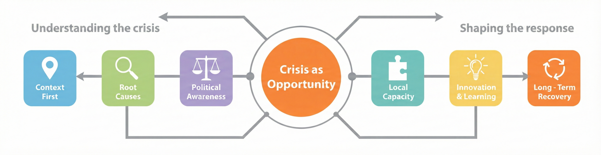
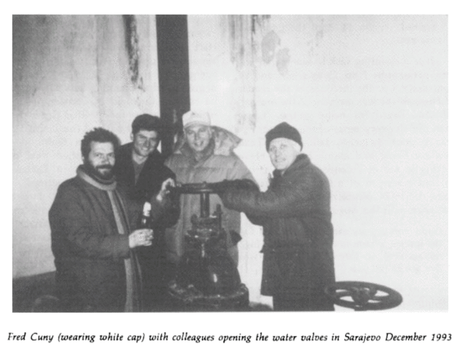
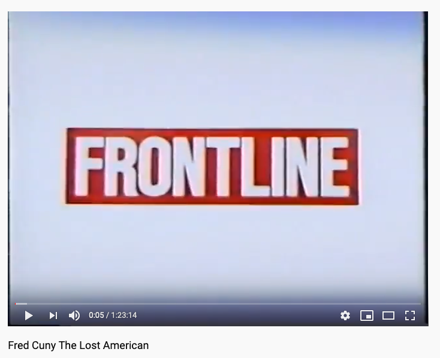

Cuny Center

His Life and Legacy
Fred Cuny was a pioneering disaster relief specialist whose 26-year career took him to over fifty countries, including Bangladesh, Bosnia, Iraq, and Chechnya. Trained as an engineer and urban planner, he combined technical skill with bold, independent thinking, earning a reputation for turning ideas into action. Awarded a MacArthur Fellowship in 1995, he disappeared later that year on a peace mission in Chechnya, leaving a lasting legacy in modern humanitarian work.
Learn MoreFred Cuny pioneered a distinctive and strategic model for humanitarian action that continues to shape the field today. The Cuny Approach fundamentally shifted the focus of aid from mere short-term relief to leveraging disaster and conflict as a catalyst for long-term social change. This methodology is built on six foundational principles that empower humanitarians to build back better, smarter, and stronger.

Explore the life and legacy of Fred Cuny, watch documentaries and interviews about his life, and see how others are pushing his agenda forward.

Discover Fred's writings, reports, and innovative solutions that transformed the field of humanitarian assistance.

Watch videos about Fred’s life, work, and the broader “Cuny Approach” to humanitarian assistance.
Hear from the friends, family, and colleagues of Fred about his life, work, and legacy.